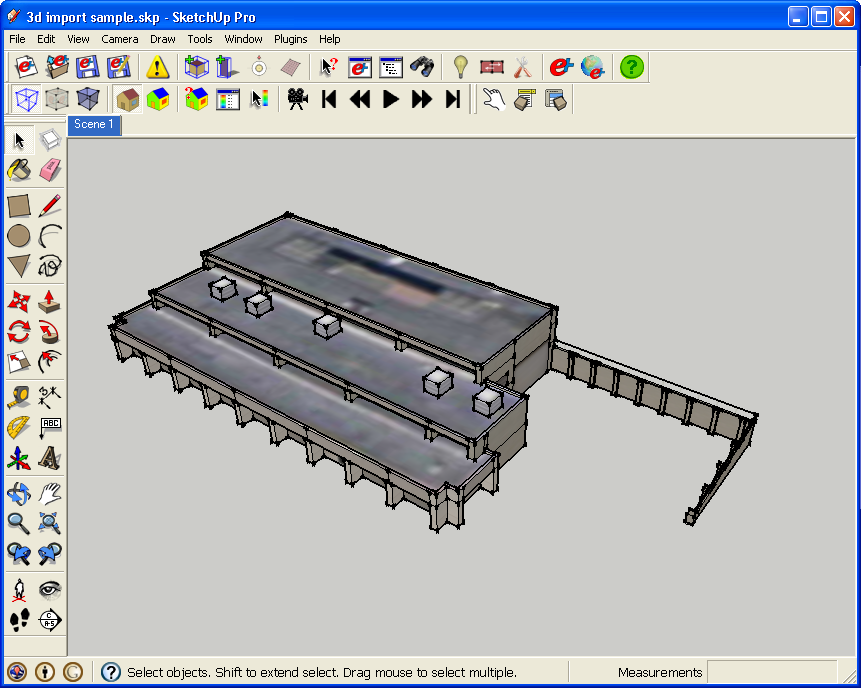
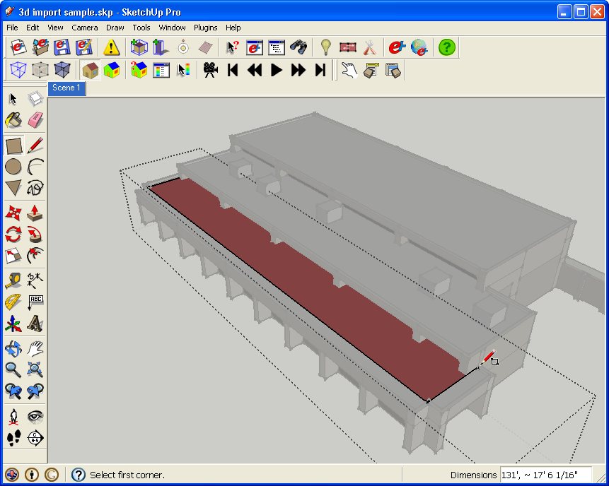
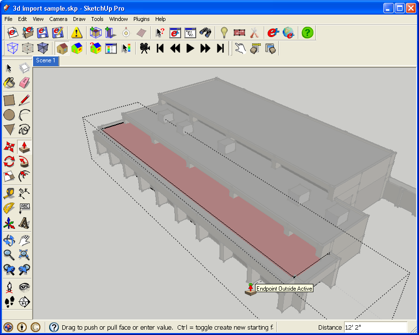
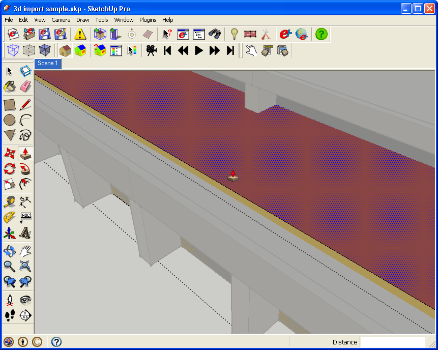
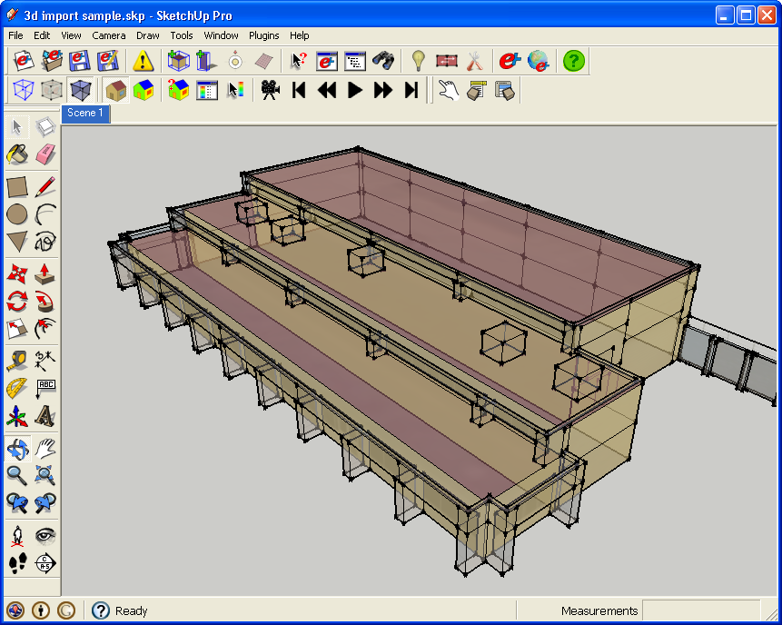
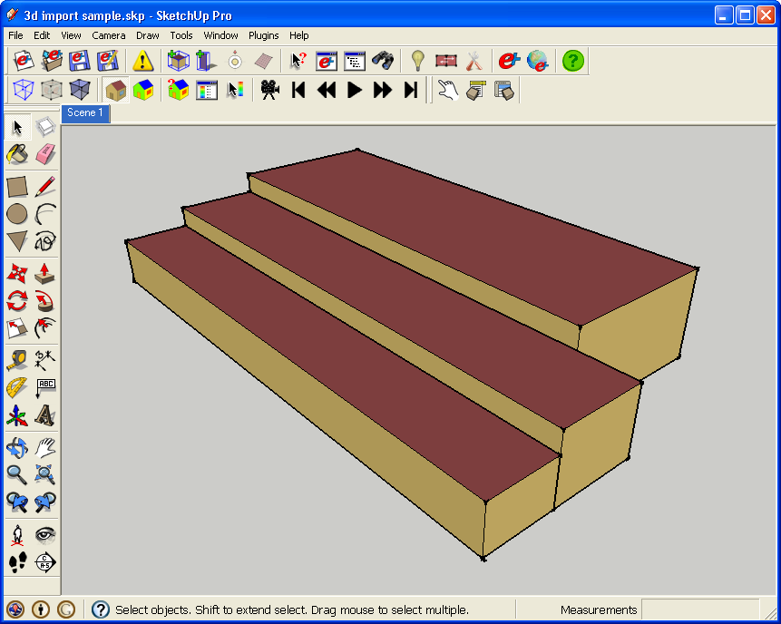
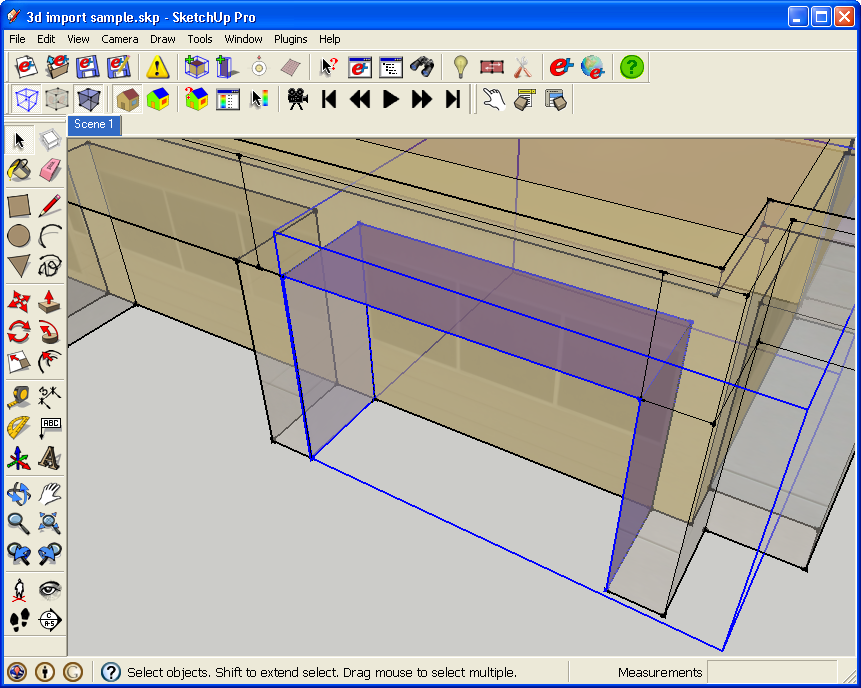
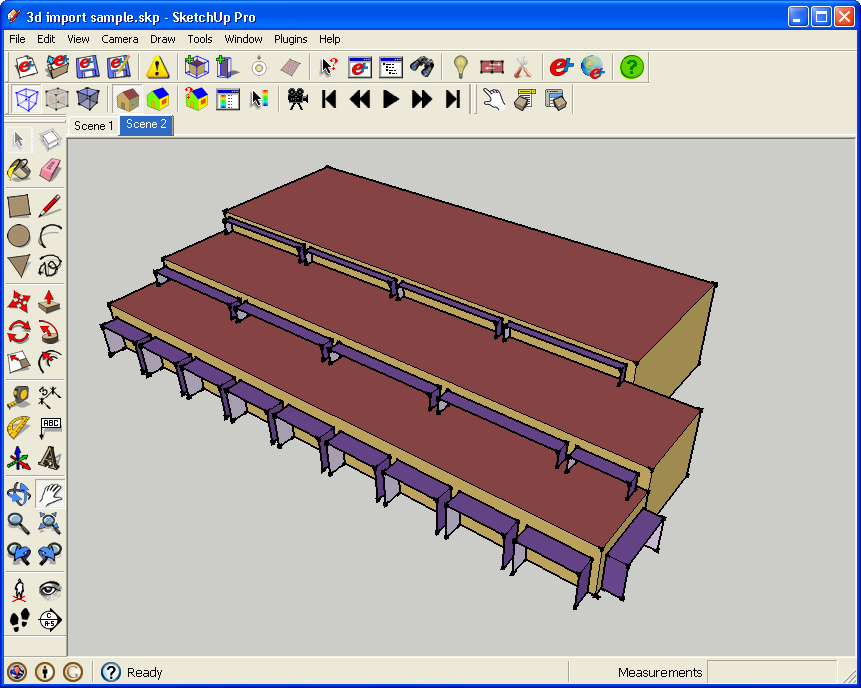
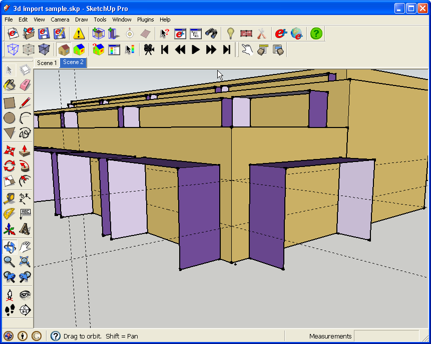
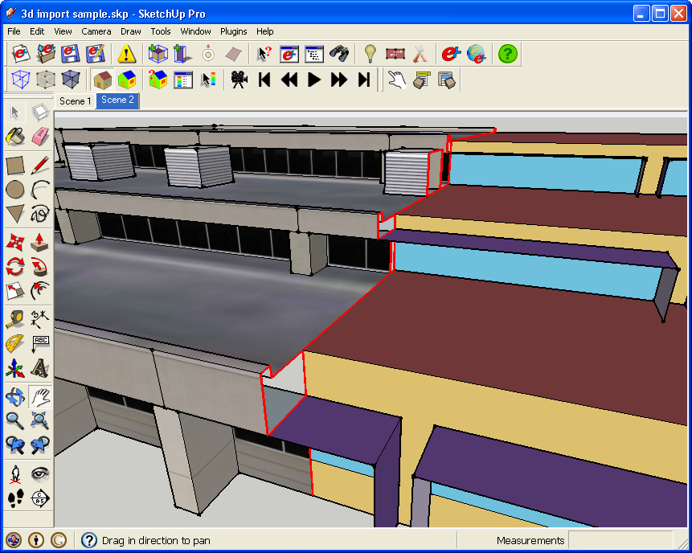

|
|
Using BuildingMaker to create EnergyPlus projects
Sources of 3d Models
- The model used in this tutorial came from GoogleEarth, but there other sources that your 3d models could come from that would share a similar workflow.
- 3d models coudl come from AutoCad, Revit, Microstation, or some other third party Cad application.
- You could have previously modeled SketchUp files that you now want to do energy modeling on.
- Simple photo textured models generated using Google BuildingMaker or SketchUp's Match Photo feature could also be the source for an OpenStudio model.
- Whatever you use, after you open or import it, it is probably a good idea to wrap it into a single group or component so you can show and hide it easily.
Adding EnergyPlus Zones
- I'm going to turn the model below into a three zone EnergyPlus model with shading groups around the windows.

- Create a new zone and start to draw it.
- Instead of drawing the ground first, which would be typical, here I draw the roof first. Now when you draw faces about the ground plane sometimes the face normal is reversed depending upon how you draw it. If this happens, OpenStudio may get confused and make it a floor. You will know if this happens by the color, or you can use the Object Info Window or Information Tool. If this happens, use the Object Info Window to turn it into a roof before you continue.

- Next I use the Push/Pull tool to turn my roof into a 3d object. I use the inference tools to snap to an object in my original model that is on the ground plane.

- A minor adjustment I make below is to push the roof down from the top of parapet to the roof. You could also use the Push/Pull tool to push the exterior walls in by the wall thickness.

- Next you can see the three zones overlayed with the architectural model. I have X ray mode on to make everything translucent.

- Below I have turned off the original architectural model so you just see the EnergyPlus Zones. The zones are basic at this pont. Next I will add shading surfaces and then sub-surfaces.

Creating Shading Groups and Surfaces
- To create the shading surfaces, I first made a shading group. I again used SketchUp's line tool and the inference locks to draw three shading surfaces associated with a window. I could have also copied them, and then pasted in place within the shading group, but that should be done with care and only when the model geometry is very clean. Similarly you can also use the Move/Copy tool to make multiple copies if the window and shading geometry are the same.

- Below is the model after all of the shading groups are done.

Added Sub-surfaces
- If you want to add sub-surfaces go back into the individual zones. You may be able to copy or draw over the existing window geometry from the architectural model.
- In this example the wall and window are made of one face, and you can only tell where the window is because of the photo texture. To make things easier I used temporary construction guides, similar to what I did in the 2d import tutorial.

- The last screen-shot below shows a split model with the architectural model on the left and the EnergyPlus energy model on the right. You can see that while things line up, there is a specfic subset of the overall building geometry that OpenStudio needs. Putting a lot of thought into how you make your Zones and other objects will improve the accuracy of your energy anaysis, and will also speed up the simulation time.

- If you would like to re-create this, I have placed the SketchUp file of architectural model in OpenStudio's Examples folder. I have also saved the IDF file with the Energy Plus objects I created.
|
|
|